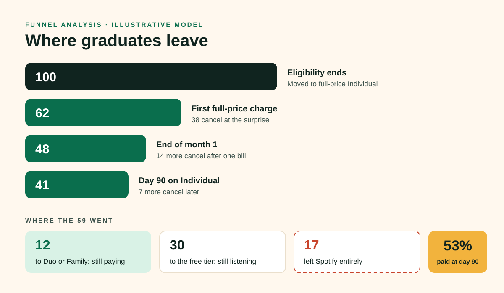
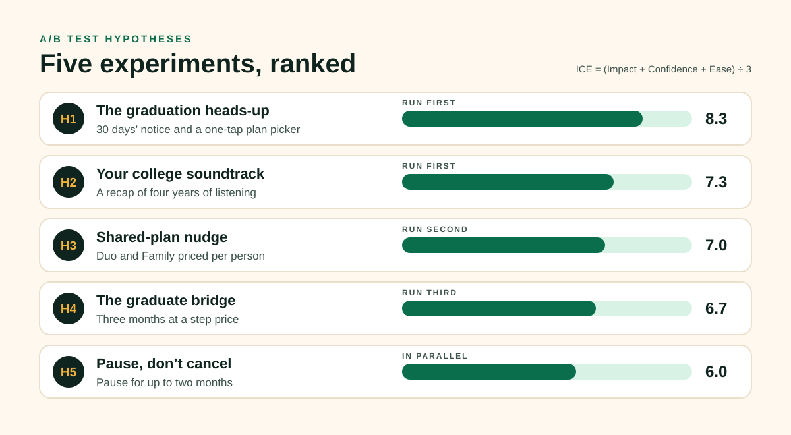
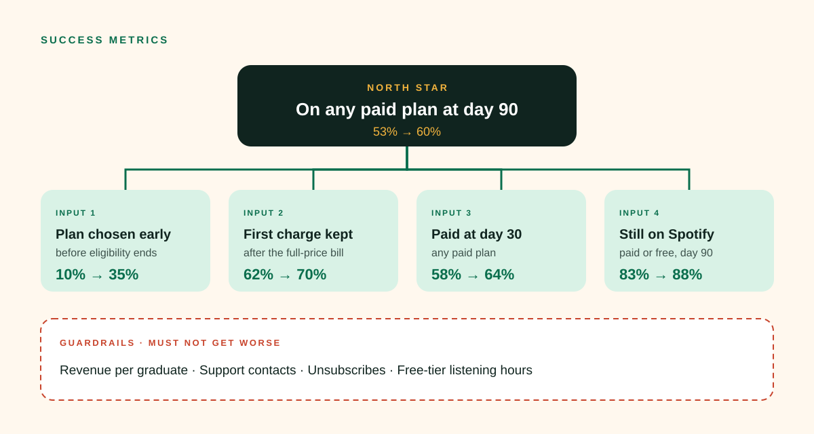

Spotify · Growth concept
Graduation Day
Graduation is the most predictable churn moment Spotify has: the student discount ends and the bill roughly doubles, in the same months people move and start first jobs. This plan turns that price shock into a milestone.
- North Star: paid at day 90
- 5 experiments
- Model: 53% → 60%
01 · Problem and opportunity
A churn moment with a date on it.
Growth now depends as much on keeping subscribers as on adding them, and graduates reviewing their subscriptions are one bundle offer away from a competitor.
281M
Premium subscribers
Spotify’s total at the end of Q3 2025.
~2×
The price jump
Student pricing is roughly half of full-price Individual.
1
Goal
More graduates on any paid plan 90 days after the discount ends.
02 · Funnel analysis
People leave at the surprise, not after trying the price.
In this illustrative model, the biggest drop comes at the first full-price charge, and most leavers stay on Spotify for free. The product isn’t the problem; the jump is.

03 · A/B test hypotheses
Five experiments, each aimed at a leak.
Ranked by impact, confidence and ease. The cheapest fixes for the biggest leak run first.

H1 · The heads-up
If we warn students 30 days ahead and offer a one-tap plan picker, fewer cancel at the first full-price charge.
H2 · College soundtrack
If graduates get a recap of four years of listening, more stay on Spotify, because their history can’t be bundled away.
H3 · Shared plans
If Duo and Family show the per-person price, more graduates move to a shared plan instead of free.
04 · Success metrics
Decide on the North Star. Diagnose with the inputs.
Shared plans count as success: a graduate on a friend’s Duo plan is still a paying listener. Guardrails make sure retention isn’t bought with revenue.

The full concept
Read the documents
The full model, experiment designs and metric definitions are on GitHub.